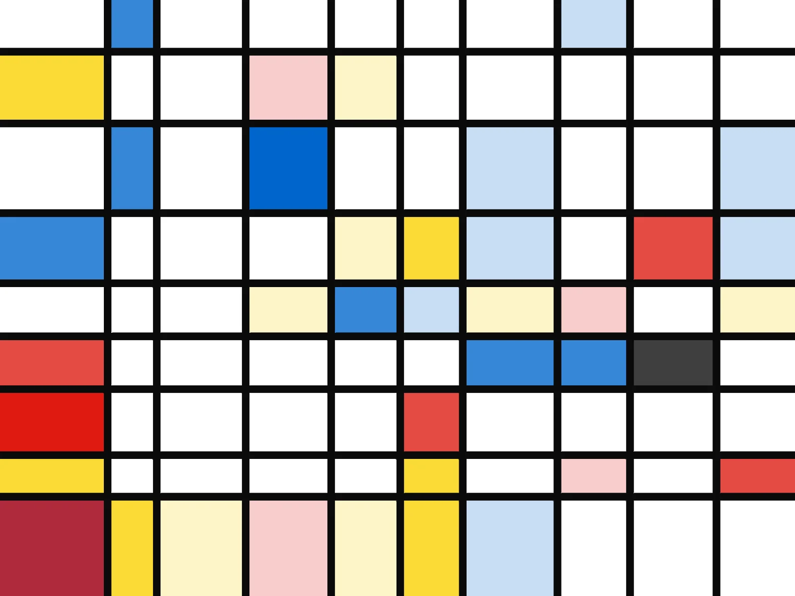
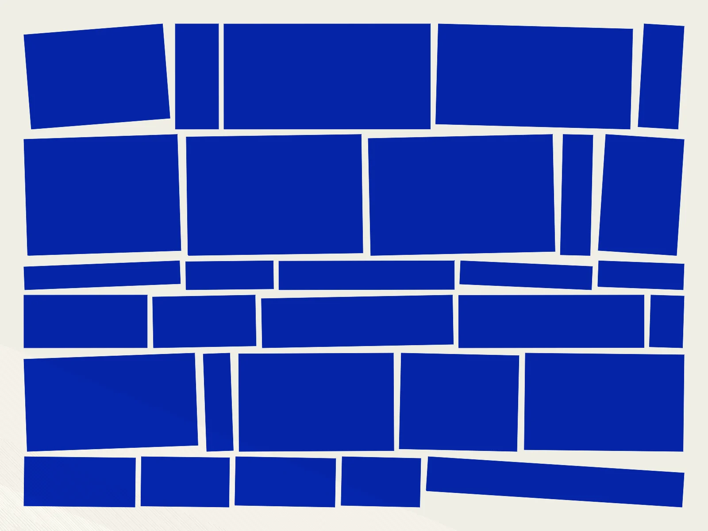
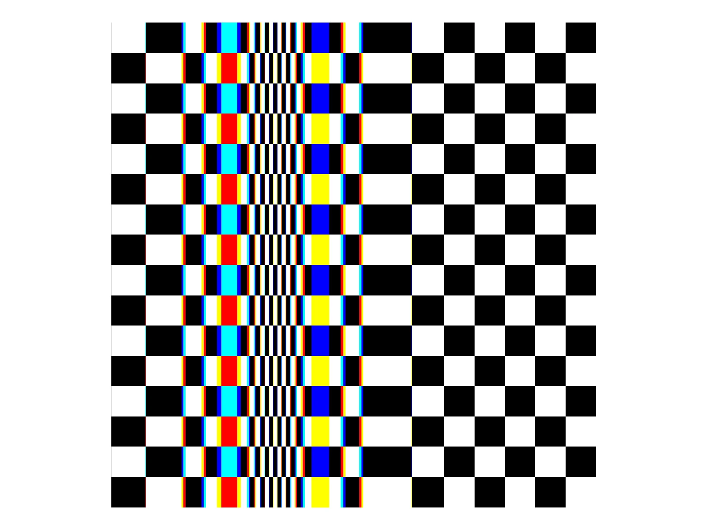
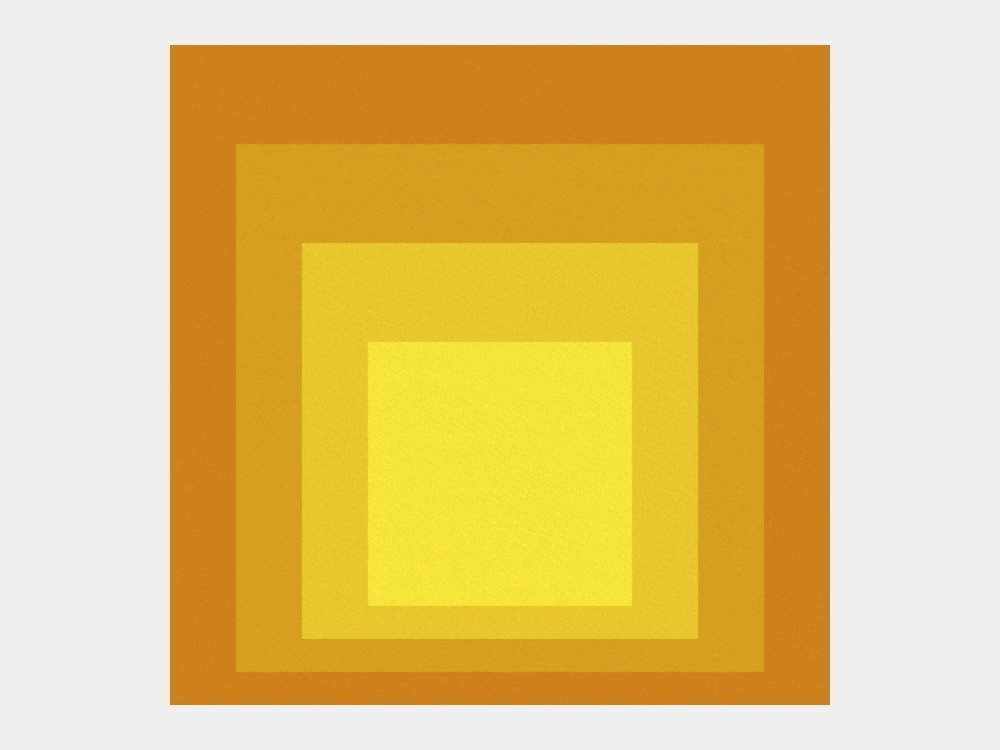

Geometric Abstraction
Fullscreen GLSL studies inspired by the pioneers of abstract art. Hard edges, primary colors, and structured composition rendered as real-time shaders.

Mondrian
An asymmetric grid of black lines and primary-colored rectangles, inspired by Piet Mondrian's neoplastic compositions. Grid lines drift slowly while colors migrate between cells.

Metaesquema
A grid of monochromatic rectangles, each subtly rotated, inspired by Helio Oiticica's Metaesquemas. Color slowly cycles through ultramarine, black, vermilion, and orange.

Perceptual Shift
A warped checkerboard inspired by Bridget Riley's Movement in Squares. Column widths compress toward a focal point, creating an optical illusion of depth, with subtle chromatic fringing at the tightest compression.

Homage to the Square
Four nested squares in Albers' proportional system, offset upward with more bottom margin. Six curated palettes crossfade slowly, exploring how adjacent flat colors shift perception.